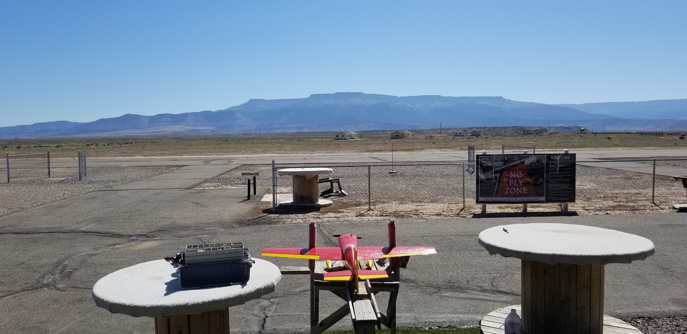
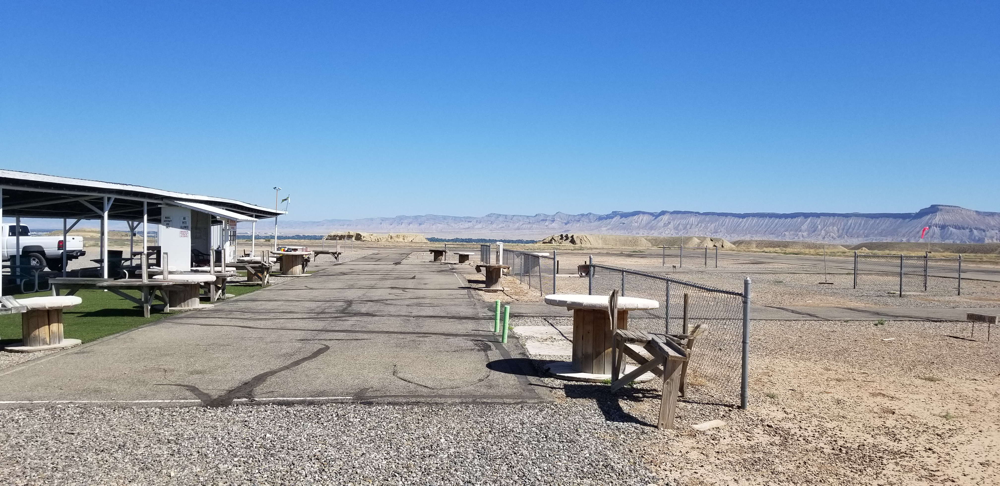
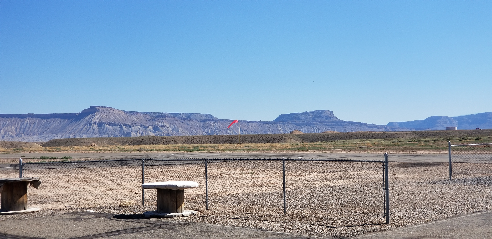

Club, private land or public area? These are pretty much your three options for finding somewhere to fly rc airplanes.
Flying at an rc airplane clubIt could be that you have an rc flying club close to where you live - use the rc airplane club directory in this website to see if there's one within a convenient distance from home. If there is, do consider joining especially if you're thinking of flying IC powered planes. Such airplanes are more involved than your typical electric park flyer, so help from other modellers is always a good thing.
If there's a club nearby but you don't want to join, it's a very good idea to pop along to their field one weekend and talk to the members about flying in the area. Frequency interference is a very serious issue and can't be ignored if there's potential for conflict.
While it's true that most of us are using 2.4GHz radios these days, it's still very possible that you have bought an rc airplane that utilises a traditional MHz radio system. This is where you have to be very concerned about radio interference from or to other flyers nearby. If you and another flyer are both using a MHz radio within close range (a mile or less) then you need to be sure about who is on which frequency.
Flying your rc airplane from private landIf you're lucky enough to have access to private open land - either your own or a friendly farmer's - then you can fly from this so long as you have permission to do so. Private land is the preferable option over flying from somewhere public, because you can pretty much do what you like when you like, without the worry of being yelled at by a member of the public who doesn't like rc airplanes!
Of course, it could be that you've bought an ultra micro type electric rc plane and that your back yard is big enough to fly it in. Lucky you, you're in an enviable position!
Flying your rc airplane from a public areaYour final option is to fly your plane from a public area. Depending on the size and type of your airplane, suitable locations include public parks, sports fields, ball parks, beaches, open hill sides.... You get the idea.
Public areas are good for flying rc airplanes - with care! Above: public fields are great for flying rc airplanes, so long as it's permitted!
The crucial thing to remember when flying in a public area is safety. Read these rc flying do's and don'ts for flying your rc airplane from such a place, and always use common sense and act responsibly.
As strange as it might seem, not everyone in the world enjoys watching an rc airplane zooming around the sky. It only takes the wrong kind of person to complain to a local authority, and that location can quickly and easily be shut down to model flyers. So always always think about where you're flying, and be responsible. None of us want this hobby to get a bad reputation.
On that note, the radio control flying hobby has never been in the public eye as much as it now, thanks to the popularity of rc drones. We're all at risk of being caught up in strict new rules and regulations, so choosing a suitable flying site is more important now than it ever has been. And watch this space, because things are only set to become tighter as governing bodies crack down on UAV operations.
Wherever you want to fly from, your flying location needs to be open and spacious. The size of your plane will determine what size area you need to fly in, but for, say, a 40 inch wingspan electric RTF airplane a ball park would provide ample airspace - that should give you an idea of the kind of area you should be looking for.
Tip: when searching for local flying sites, use Google Earth, Google Maps or Windows Live satellite imagery - it's simply the best way of searching your area quickly!
Other things to note when looking at where to fly rc airplanes include:
Presence of objects such as trees, posts, pylons, lights, power lines etc. How close members of the public will be to you while you're flying. Proximity of houses, schools, offices, shops etc. Proximity of roads and highways; rc planes can be a big distraction to some drivers. The bottom line is that you need a large(ish) open space where there is no danger of causing trouble, being a nuisance or risking damage to people or property. And on that note, you absolutely must check local regulations and laws to see if flying radio control aircraft is even permitted. If it's not, and you take to the skies, you could well have an angry official breathing down your neck and writing you a ticket!
Another point to make is that of the sun position. The last thing you want is to be flying across the sun (this is a definite no-no), so do pay attention to where the sun is in relation to where you'll be flying. The ideal situation is for the sun to be behind you so there's no danger of being blinded as you're flying.